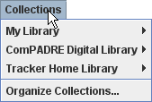

To put your Collection on the web:
To open your web Collection, any Tracker user can enter the URL of the Collection XML file into the URL field of the DL Browser and click the Load button. The Collection will open in a new tab.
The Collections menu in the DL Browser provides an even easier way to open a Collection. The Collections menu is subdivided into three built-in "library" menus as shown and described below.

My Library is entirely under the user's control. By default, it contains only a local (empty) Collection called My Collection. To add a new Collection to My Library, open the Collection in a tab, then right-click the tab and choose the popup Add this to My Library item. To remove a Collection or edit My Library, choose Collections|Organize Collections....
Collections in My Library can be opened directly from the Collections|My Library menu.
The Tracker Home Library provides links to high-quality Collections of videos and Tracker resources and is available to all Tracker users through the Collections|Tracker Home Library menu. To recommend your Collection for the Tracker Home Library, email the Collection URL to the Tracker Home Library editor, Douglas Brown.
The ComPADRE Digital Library, a part of the National Science Digital Library system, is a growing network of educational resource collections supporting teachers and students in Physics and Astronomy. As a user you may explore collections designed to meet your specific needs and help build the network by recommending resources, commenting on resources, and starting or joining discussions. For more information, see <http://www.compadre.org/OSP/>.
Tracker resources on ComPADRE are available to all Tracker users through the Collections|ComPADRE Digital Library menu. To recommend a Resource for ComPADRE, visit the Suggest a Resource page at <http://www.compadre.org/osp/items/suggest.cfm>. Contact the OSP Collection editor, Wolfgang Christian, for additional information.